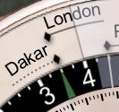
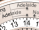
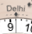

Note: It is not necessary to know these rules in order to use Terra. They are provided as background information for the curious.
Rules for which slot(s) of the World Time Ring that a city may appear in:
The general rule is that a city may appear only in the slot(s) which minimize the maximum travel of the "dot hand" from the center of the city label. Labels are centered at an angular position which corresponds to a time halfway between two integral UTC hour offsets, so that cities with DST will have their two offset times arrayed on either side of the label center.  For example, notice that the green UTC hand is at 3:30am, and that the label for London is *centered* at 4am, 30 minutes to the right of UTC, meaning UTC+0:30, and the label for Dakar is *centered* at 3am, 30 minutes to the left of UTC, meaning UTC-0:30. Each of the labels is similarly on a :30 UTC offset, even though the city *dots* are typically on integral UTC hour offsets (as with London and Dakar here, whose dots coincide with UTC+0 at 3:30am).
This minimization of the dot's distance from the label means that a city which has DST can typically appear in only one slot, unless the two offsets are exactly 30 minutes from an integral UTC hour offset. For example, New York City has offsets of UTC-5 in the winter and UTC-4 in the summer; the minimum-dot-travel requirement means it can only appear in the slot whose city label is centered at UTC-4:30. In the picture above, it clearly can't go either where Chicago or Santiago is, given its dot's travel range.
But Adelaide, Australia has offsets at UTC+10:30 in the summer and UTC+9:30 in the winter; it can go either in the slot whose label is centered at UTC+9:30 or the slot centered at UTC+10:30,  because either choice results in the dot being a maximum of one hour from the label center. Here we've put it in both slots just to illustrate the capability.
On the other hand, a city with no DST but which has an integral UTC hour offset can also go in two slots. For example, Honolulu, with its unchanging offset of UTC-10, can go either in the slot whose label is centered at UTC-10:30 or the slot centered at UTC-9:30; each choice results in the dot being 30 minutes from the label center. Here again we've put it in both slots for illustration.
Finally, a city with no DST but with a non-integral UTC hour offset can only go in one slot. For example, Delhi, with an unchanging offset of UTC+5:30,  can only go in the slot whose label is centered at UTC+5:30; at that position its dot is directly underneath the label center.